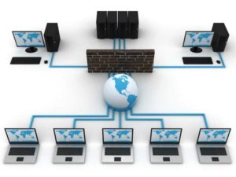

ADMINISTRADOR DE RED
Los administradores de red son básicamente el equivalente de red de los administradores de sistemas: mantienen el hardware y software de la red.
Esto incluye el despliegue, mantenimiento y monitoreo del engranaje de la red: switches, routers, cortafuegos, etc. Las actividades de administración de una red por lo general incluyen la asignación de direcciones, asignación de protocolos de ruteo y configuración de tablas de ruteo así como, configuración de autenticación y autorización de los servicios.
Frecuentemente se incluyen algunas otras actividades como el mantenimiento de las instalaciones de red tales como los controladores y ajustes de las computadoras e impresoras. A veces también se incluye el mantenimiento de algunos tipos de servidores como VPN, sistemas detectores de intrusos, etc.
Los analistas y especialistas de red se concentran en el diseño y seguridad de la red, particularmente en la resolución de problemas o depuración de problemas relacionados con la red. Su trabajo también incluye el mantenimiento de la infraestructura de autorización a las redes.
(01-06-2019). Wikipedia. www.wikipedia.com. https://es.wikipedia.org/wiki/Administrador_de_red (URL).